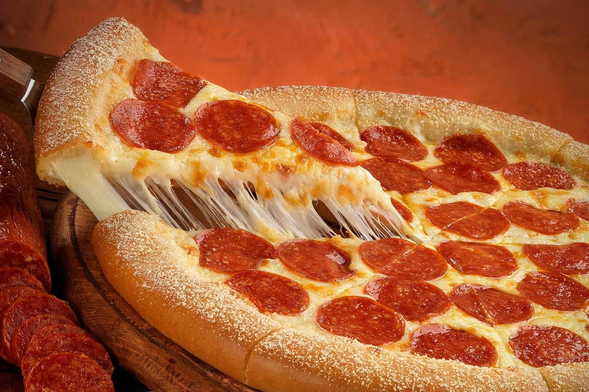

Odin Recipies
Pepperoni pizza

Description
Pizza mozzarella pizza mozzarella pizza mozzarella pizza mozzarella pizza mozzarella rella rella rella rella rella rella reeeeee.
Pizza, do i have to say anything else? LETS GET RIGHT ONTO MAKING IT RAAAAHHHHH.
Ingredients
For the pizza sauce
- 1/2 cup water
- 1/2 cup Tomato Paste
- 1 teaspoon dried oregano, crushed
- 1 teaspoon dried basil, crushed
- 1/2 tsp garlic powder
- 1/2 tsp onion powder
- 1/2 tsp sugar
- 1/2 tsp salt
- 1/2 tsp black pepper
For the pizza crust
- 3 1/4 cups of all purpose flour
- 1 tsp of RapidRise Yeast
- 1 tsp sugar
- 1+1/2 tsp of salt
- 1+1/3 cups of very warm water
- 1/3 cup of olive oil
Toppings
- CHEESE CHEESE MOZZARELLA CHEESEE
- Pepperoni
Steps
- Preheat the oven to 425 degrees F (220 degrees C). Grease two 12-inch pizza pans.
- Make sauce: Whisk together water, tomato paste, oregano, basil, garlic powder, onion powder, sugar, salt, and pepper in a medium bowl until smooth. Set aside.
- Spread a parchment paper in a 8x8 inch baking pan and pour the batter on the baking panMake crust: Combine 2 cups flour, yeast, sugar, and salt in a large bowl. Add warm water and oil; mix until well blended, about 1 minute. Gradually add remaining flour, a little at a time, until a soft, sticky dough forms.
- Transfer dough to a floured surface; knead until dough is smooth and elastic, about 4 minutes. Add more flour as needed. (If using RapidRise yeast, let dough rest, covered, for 10 minutes.)
- Divide dough in half. Lightly flour your hands, then pat each piece of dough onto the prepared pizza pans.
- Top dough with sauce, cheese, and pepperoni and bake until crusts are browned and cheese is bubbly. Usually takes 18 to 20 mins
- EAT UP!!!
Imma be real here, I was too lazy, I used this recipe cuz damn it was so boring to read through all that jargon.
I only care about eating pizzas I guess, thanks for reading through this recipe tho. Have fun smellas.
I couldn't restrain from posting this sorry :p
© All rights reserved by NONE